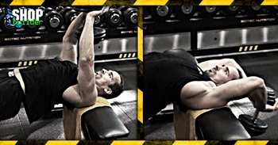

Ugrás a tartalomra
Ugrás a tartalomra
Testépítés
Áthúzás egykezes súlyzóval
{kind=link}
Hatás
Az áthúzás mellre a legjobb mozgás a mellkas tágítására, már amennyire ez lehetséges egyáltalán. Jelentős igénybevétel jut a mell-, a hát- és az elülső fűrészizmokra. Az áthúzás egykezes súlyzóval egy kifejezetten univerzális gyakorlat a mell- és hátizmok fejlesztésére.
Kiinduló helyzet
Fogj meg egy-egy közepesen nehéz egykezes súlyzót mindkét kezedbe úgy, hogy tenyered simán feküdjön a felső lemezek aljára, és a hüvelykujjaid a rúd körül legyenek. Feküdj a hátadra keresztben egy vízszintes gyakorlópadon úgy, hogy csak a vállad és felső hátad érjen a padhoz. Lábadat körülbelül vállszélességnyire terpeszd, és fejed kissé lógjon lefelé. A súlyzókkal kartávolságnyira közvetlenül mellkasod felett haladj. Hajlítsd be a karodat kb. 15 fokkal, és tartsd így a mozgás során, ne nyújtsd ki teljesen a karodat.
A mozgás
Lassan ereszd a súlyzókat hátra és lefelé félkörívben olyan alacsonyra, amennyire még kényelmesen tudod. Emeld lassan vissza ugyanazon ív mentén a kiinduló pontra, és ismételd a mozgást az előírt számban. Ügyelj rá, hogy az áthúzás felső végpontján megfeszítsd a mellkasodat, tudatosan!
Edzéstipp
Jobban megnyújthatod mellizmaidat, ha csípődet lesüllyeszted kissé, amint a súlyzók a mozgás legalsó pontjára érnek. Az áthúzás mellre végezhető csigán is, amennyiben egy alsó csigához teszel egy vízszintes padot. A mozgás ebben az esetben hasonló, az előnye abban rejlik, hogy a felső ponton is folyamatos feszülés alatt tartja a csiga a mellizmot.